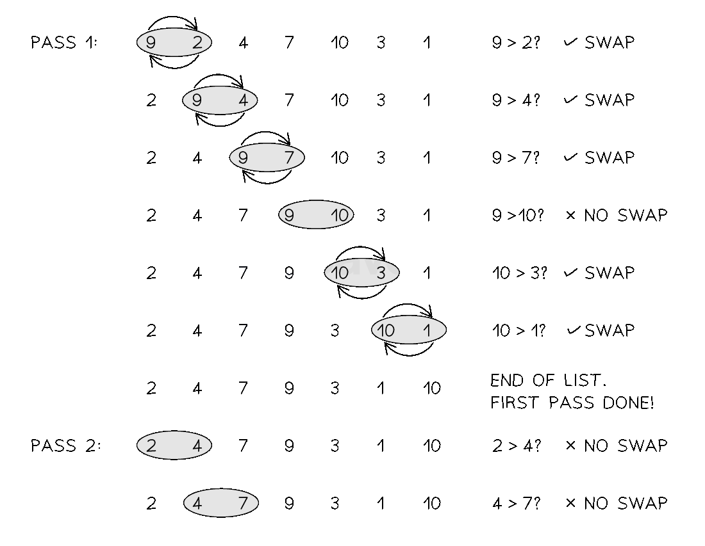
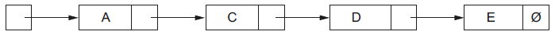
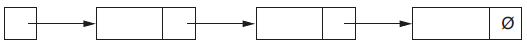
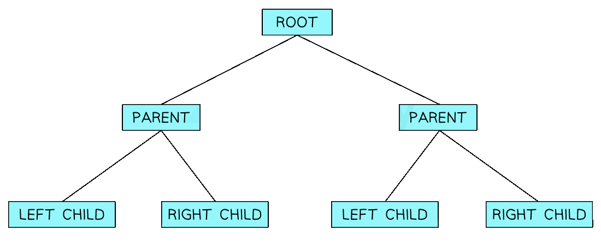
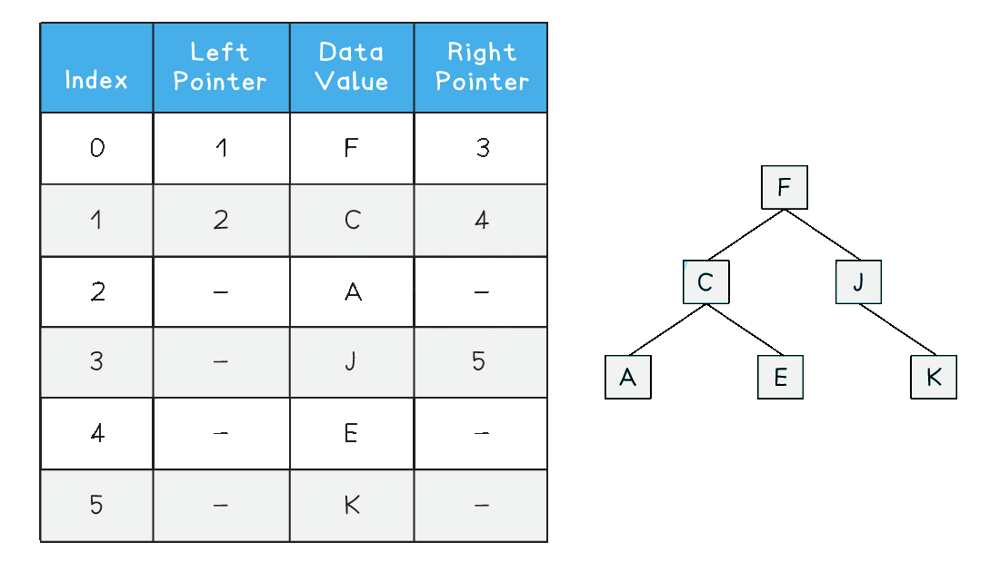
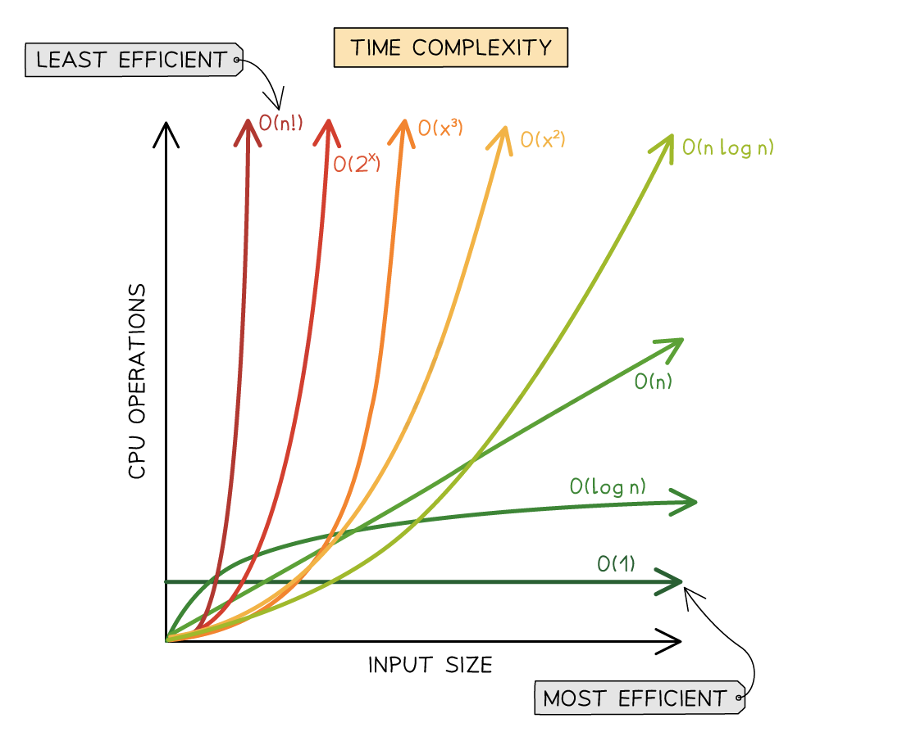

Linear Search
What is a linear search?
- The linear search is a standard algorithm used to find elements in an unordered list
- The list is searched sequentially and systematically from the start to the end one element at a time
- Comparing each element to the value being searched for
- If the value is found the algorithm outputs where it was found in the list
- If the value is not found it outputs a message stating it is not in the list
-
An example of using a linear search would be looking for a specific student name in a list or searching for a supermarket item in a shopping list
 Figure 1: Performing the Linear Search
Figure 1: Performing the Linear Search -
To determine the algorithm’s execution time as measured by the number of instructions or steps carried out, Big-O notation must be used
- The loop is executed n times, once for each item. There are two instructions within the loop, the if statement and an assignment, hence the Big-O for the loop is O(2n)
- There are three initial statements which are O(1)
- The overall Big-O notation is therefore 2n + 3, which when coefficients are factored out, becomes O(n) as linear time dominates constant time. The constant term and coefficients contribute significantly less as the input size n grows larger
- It is important to remember here that O(n) is the worst case scenario. The best case scenario O(1) would find the item the first time, while the average case would be O(n/2) which when we remove coefficients still becomes O(n)
- As the linear search requires no additional space, it is space complexity O(n) where n is the number of items in the list
- Given the following list [5, 4, 7, 1, 3, 8, 9, 2], a trace table for the linear search is shown below Trace Table of the Linear Search
| item | index | i | list[i] | found |
|---|---|---|---|---|
| 8 | -1 | 0 | 5 | False |
| 1 | 4 | |||
| 2 | 5 | |||
| 3 | 1 | |||
| 4 | 3 | |||
| 8 | 5 | 5 | 8 | True |
Pseudocode
FUNCTION linearSearch(list : ARRAY OF STRING, item : STRING) RETURNS INTEGER
DECLARE index : INTEGER
DECLARE i : INTEGER
DECLARE found : BOOLEAN
index ← -1
i ← 0
found ← FALSE
WHILE i < LENGTH(list) AND found = FALSE
IF list[i] = item THEN
index ← i
found ← TRUE
ENDIF
i ← i + 1
ENDWHILE
RETURN index
ENDFUNCTION
-
Function definition:
FUNCTION linearSearch(list : ARRAY OF STRING, item : STRING) RETURNS INTEGER- The function takes a list and a target item.
- It returns the index of the item if found, or -1 if not.
-
Variable declarations:
index,i, andfoundare declared: -
indexstores the result (default is -1 if not found). iis the loop counter.foundis a boolean used to stop the search once the item is found.- Initialisation:
index ← -1→ start with “not found”i ← 0→ start from the first index of the listfound ← FALSE→ the item hasn’t been found yet-
Loop condition:
WHILE i < LENGTH(list) AND found = FALSE -
Continue looping while there are items left to check and the item hasn’t been found.
-
Comparison inside loop:
IF list[i] = item THEN -
Check if the current element equals the search item.
- If a match is found:
index ← i→ save the current indexfound ← TRUE→ stop searching- Increment:
i ← i + 1→ move to the next item- End of loop:
- Once the loop finishes (either item is found or end of list is reached), return the result.
-
Return value:
RETURN index -
Returns the index where the item was found.
- If it wasn’t found, it returns
-1.
Python
def linear_search(list, item):
index = -1
for i in range(len(list)):
if list[i] == item:
index = i
break # Stop the loop once the item is found
return index
Java
public class LinearSearch {
public static int linearSearch(int[] list, int item) {
int index = -1;
for (int i = 0; i < list.length; i++) {
if (list[i] == item) {
index = i;
break; // Stop the loop once the item is found
}
}
return index;
}
Binary Search
What is a binary search?
- The binary search is a more efficient search method than linear search
- The binary search compares the middle item to the searched for target item. If the values match then the index is returned. If not then the list is adjusted such that:
- the top half is ignored if the target item is less than the middle value
- or the bottom half is ignored if the target item is larger than the middle value
- Once the list has been adjusted, the search continues until the item is found or the item is not in the list
- It is important to note that the list must be sorted for the binary search to work correctly
-
The implementation of the binary search is shown below
 Figure 2: Performing the Binary Search
Figure 2: Performing the Binary Search -
When determining the rounding of the midpoint, rounding up or down are both valid provided consistent use of the same rounding is used throughout the algorithm
- It is important to note that the binary search does not discard, delete or remove parts of the list, it only adjusts the start, end and mid pointers. This only gives the appearance that items have been discarded or deleted
- The binary search is an example of a logarithmic time complexity O(logn) as it halves the search space with each iteration of the while loop. This approach is known as divide and conquer, where a problem is progressively reduced in size such that when each problem is at its smallest it is easiest to solve
- The algorithm starts with n items before the first iteration. After the first there are n/2 items, after the second there are n/4 items, after the third there are n/8 items and so on, leading to n/2 i after i iterations
- The worst case scenario or maximum number of iterations to find one item is where n/2 i = 1
- Multiply both sides by 2 i to get: n = 2 i
- Take the logarithm of both sides: logn = log2 i
- Rewrite with i at the front (using laws of logarithms): logn = ilog2
- Log2 (assuming a base of 2 is used) becomes 1, giving: logn = i
- The binary search is therefore O(logn)
- The best case scenario would be O(1) where the item is found on the first comparison, while the average case would be O(logn/2) which would find the item somewhere in the middle of the search. Removing coefficients means the average case would therefore still be O(logn)
- As the binary search requires no additional space, it is space complexity O(n), where n is the number of items in the list
- Given the following list [3, 5, 9, 10, 14, 16, 17, 21, 24, 26, 28, 30, 42, 44, 50, 51], a trace table for the binary search is shown below Trace Table for the Binary Search
| item | index | found | start | end | mid | list[mid] |
|---|---|---|---|---|---|---|
| 21 | -1 | False | 0 | 15 | 8 | 24 |
| 0 | 7 | 4 | 14 | |||
| 5 | 7 | 6 | 17 | |||
| 21 | 7 | True | 7 | 7 | 7 | 21 |
Pseudocode
FUNCTION binarySearch(list : ARRAY OF INTEGER, item : INTEGER) RETURNS INTEGER
DECLARE found : BOOLEAN
DECLARE index : INTEGER
DECLARE start : INTEGER
DECLARE end : INTEGER
DECLARE mid : INTEGER
found ← FALSE
index ← -1
start ← 0
end ← LENGTH(list) - 1
WHILE start <= end AND found = FALSE
mid ← (start + end) DIV 2
IF list[mid] = item THEN
found ← TRUE
index ← mid
ELSE
IF list[mid] < item THEN
start ← mid + 1
ELSE
end ← mid - 1
ENDIF
ENDIF
ENDWHILE
RETURN index
ENDFUNCTION
-
Function definition:
FUNCTION binarySearch(list : ARRAY OF INTEGER, item : INTEGER) RETURNS INTEGER- The function searches a sorted array for a given item.
- It returns the index of the item if found, or -1 if not found.
- Variable declarations:
found→ a flag to indicate if the item is found (initiallyFALSE)index→ the result to be returned (initially-1)start→ index of the start of the current search range (initially0)end→ index of the end of the current search range (initiallyLENGTH(list) - 1)mid→ index of the middle element in the current range-
Loop condition:
WHILE start <= end AND found = FALSE -
Keep searching while the search range is valid and the item hasn’t been found.
-
Middle element calculation:
mid ← (start + end) DIV 2 -
Calculates the index of the middle element of the current search range.
-
Check for match:
IF list[mid] = item THEN -
If the middle element is equal to the target item:
- Set
found ← TRUE - Store the
index ← mid
- Set
- Adjust search range:
- If the middle value is less than the item:
- Search the right half →
start ← mid + 1 - Otherwise:
- Search the left half →
end ← mid - 1
- Search the right half →
- Loop ends:
- The loop stops when the item is found or the search range becomes invalid.
-
Return value:
RETURN index -
Returns the index if found, or
-1if not found
Python
def binary_search(list, item):
found = False
index = -1
start = 0
end = len(list) - 1
while start <= end and not found:
mid = (start + end) // 2
if list[mid] == item:
found = True
index = mid
elif list[mid] < item:
start = mid + 1
else:
end = mid - 1
return index
Java
public class BinarySearch {
public static int binarySearch(int[] list, int item) {
boolean found = false;
int index = -1;
int start = 0;
int end = list.length - 1;
while (start <= end && !found) { // Corrected found condition
int mid = (start + end) / 2;
if (list[mid] == item) {
found = true;
index = mid;
} else if (list[mid] < item) {
start = mid + 1;
} else {
end = mid - 1;
}
}
return index;
}
Bubble sort
What is a bubble sort?
- In A Level Computer Science, a bubble sort sorts items into order, smallest to largest
- It compares pairs of elements and swaps them if they are out of order
- The first element is compared to the second, the second to the third, the third to the fourth and so on, until the second to last is compared to the last. Swaps occur if each comparison is out of order
-
This overall process is called a pass The highest value in the list eventually “bubbles” its way to the top like a fizzy drink, hence the name “Bubble sort”
-
Once the end of the list has been reached, the value at the top of the list is now in order and the sort resets back to the start of the list. The next largest value is then sorted to the top of the list
- More passes are completed until all elements are in the correct order
- A final pass checks all elements and if no swaps are made then the sort is complete
- An example of using a bubble sort would be sorting an array of names into alphabetical order, or sorting an array of student marks from a test
Performing the bubble sort

Figure 1: Performing the Bubble sortTime complexity of the bubble sort
- To determine the algorithm’s execution time as measured by the number of instructions or steps carried out Big-O notation must be used
- Four statements are present in the above algorithm O(1), followed by a while loop O(n) containing two statements and a further for loop O(n). This results in the expression: 2n 2 + 4
- As coefficients and lower order values are not used, this give the bubble sort O(n 2) worst case time complexity
- The best case scenario would be an already sorted list which means a time complexity of O(n) as each item must still be compared to check if they are in order
- The average case scenario would be an almost sorted list leading to O(n 2 /2), which if coefficients are removed still gives O(n 2)
Space complexity of the bubble sort
- A bubble sort has a space complexity of O(1) because it operates in-place, requiring a fixed amount of memory
- The fixed amount of memory is for variables such as loop counters and a temporary swap variable
Tracing a bubble sort
- The trace table follows the algorithm through, updating values that change in the table
- Each iteration of the list reduces the overall size of the list by 1 as after each pass the previously sorted final digit is in order and does not need to be rechecked. This means that 9 is in order and doesn’t need to be rechecked, followed by 9 and 7, followed by 9, 7 and 6 and so on
- When the if statement is checked a new row has been added to show the swap of list[j], list[j + 1] and Temp, followed by the subsequent change to Swap from FALSE to TRUE
- After several iterations (that are not shown) the algorithm will eventually output a sorted list Trace table of the bubble sort
| LastElement | Index | Mylist[Index] | Mylist[Index + 1] | Temp | Swap | Output |
|---|---|---|---|---|---|---|
| 10 | 1 | 5 | 9 | FALSE | ||
| 2 | 9 | 4 | ||||
| 4 | 9 | 4 | TRUE | |||
| 3 | 9 | 2 | ||||
| 2 | 9 | 9 | ||||
| 4 | 9 | 6 | ||||
| 6 | 9 | |||||
| 5 | 9 | 7 | ||||
| 7 | 9 | |||||
| 6 | 9 | 1 | ||||
| 1 | 9 | |||||
| 7 | 9 | 2 | ||||
| 2 | 9 | |||||
| 8 | 4 | 9 | ||||
| 9 | 4 | |||||
| 9 | 9 | 3 | ||||
| 3 | 9 | |||||
| 9 | 1 | 5 | 4 | FALSE | ||
| 4 | 5 | 5 | TRUE | |||
| 2 | 5 | 2 | ||||
| 2 | 5 | |||||
| 1 | FALSE | 1, 2, 2, 3, 4, 4, 5, 6, 7, 9 |
Implementing a bubble sort
Pseudocode
DECLARE list : ARRAY[0:9] OF INTEGER
DECLARE last, i, j, temp : INTEGER
DECLARE swap : BOOLEAN
list ← [5, 9, 4, 2, 6, 7, 1, 2, 4, 3]
last ← LENGTH(list)
i ← 0
swap ← TRUE
WHILE i < (last - 1) AND swap = TRUE
swap ← FALSE
FOR j ← 0 TO last - i - 2
IF list[j] > list[j + 1] THEN
temp ← list[j]
list[j] ← list[j + 1]
list[j + 1] ← temp
swap ← TRUE
ENDIF
NEXT j
i ← i + 1
ENDWHILE
OUTPUT list
- Declare and initialise variables:
listis an array of 10 integers to be sortedlaststores the length of the listiis used to track the number of completed passesswapis a boolean flag to check if any swaps occurred in a pass
- Set initial conditions:
i ← 0→ start from the first passswap ← TRUE→ assume a swap will happen to enter the loop
- Main WHILE loop:
- Continues while the list still needs sorting (
i < last - 1) and swaps are still happening (swap = TRUE) - At the start of each pass,
swapis set toFALSE
- Continues while the list still needs sorting (
- FOR loop (inner loop):
- Iterates through unsorted part of the list: from index
0tolast - i - 2 - Compares each pair of adjacent items
- Iterates through unsorted part of the list: from index
- IF condition:
- If the current item is greater than the next item, they are swapped
swap ← TRUEto indicate a change was made this pass
- If the current item is greater than the next item, they are swapped
- After inner loop:
- Increment
ito shorten the range on the next pass
- Increment
- After sorting:
OUTPUT listdisplays the sorted list
Python
def bubble_sort(list):
n = len(list)
for i in range(n - 1):
swapped = False
for j in range(0, n - i - 1):
if list[j] > list[j + 1]:
list[j], list[j + 1] = list[j + 1], list[j]
swapped = True
if not swapped:
break # Early termination if no swaps occurred
return list
Java
public class BubbleSort {
public static void bubbleSort(int[] list) {
int n = list.length;
for (int i = 0; i < n - 1; i++) {
boolean swapped = false;
for (int j = 0; j < n - i - 1; j++) {
if (list[j] > list[j + 1]) {
int temp = list[j];
list[j] = list[j + 1];
list[j + 1] = temp;
swapped = true;
}
}
if (!swapped) {
break; // Early termination if no swaps occurred
}
}
}
A global 2D array Result of type INTEGER is used to store a list of exam candidate numbers together with their marks. The array contains 2000 elements, organised as 1000 rows and 2 columns.
Column 1 contains the candidate number and column 2 contains the mark for the corresponding candidate. All elements contain valid exam result data.
A procedure Sort() is needed to sort Result into ascending order of mark using an efficient bubble sort algorithm.
Write pseudocode for the procedure Sort().[8]
Answer
PROCEDURE Sort()
DECLARE Temp : INTEGER
DECLARE NoSwaps : BOOLEAN
DECLARE Boundary, Row, Col : INTEGER
Boundary ← 999
REPEAT
NoSwaps ← TRUE
FOR Row ← 1 TO Boundary
IF Result[Row, 2] > Result[Row + 1, 2] THEN
FOR Col ← 1 TO 2
Temp ← Result [Row, Col]
Result [Row, Col] ← Result [Row + 1, Col]
Result [Row + 1, Col] ← Temp
NEXT Col
NoSwaps ← FALSE
ENDIF
NEXT J
Boundary ← Boundary - 1
UNTIL NoSwaps = TRUE
ENDPROCEDURE
- Outer loop [1 mark]
- Inner loop [1 mark]
- Correct comparison in a loop [1 mark]
- Correct swap of col1 array elements in a loop [1 mark]
- Correct swap of col2 array elements in a loop (via loop or separate statements) [1 mark]
'NoSwap'mechanism: Conditional outer loop including flag reset [1 mark]'NoSwap'mechanism: Set flag in inner loop to indicate swap [1 mark]- Reducing Boundary in the outer loop [1 mark]
Insertion sort
What is an insertion sort?
- In A Level Computer Science, the insertion sort sorts one item at a time by placing it in the correct position of an unsorted list
- This process repeats until all items are in the correct position
- Specifically, the current item being sorted is compared to each previous item
- If it is smaller than the previous item then the previous item is moved to the right and the current item takes its place
- If the current item is larger than the previous item then it is in the correct position and the next current item is then sorted as illustrated below
Performing the insertion sort
Figure 2: Performing the Insertion sort
Time complexity of an insertion sort
- In the above algorithm, one statement is present, a for loop with three statements and a nested while loop that contains two statements
- The time complexity for the insertion sort would be 3n*2n + 1, giving 6n 2 + 1. 3n comes from the for loop having three statements inside it, not including the while. 2n comes from the while loop having two statements inside it
- Removing coefficients and dominated factors leaves O(n 2) as the worst case scenario
- The best case scenario would be an already sorted list which means each item is checked one at a time giving a time complexity of O(n) The average case scenario would be a half sorted list giving O(n 2 /2), which when coefficients are removed still gives O(n 2)
Space complexity of an insertion sort
- As the insertion sort requires no additional space, it is space complexity O(1)
Tracing an insertion sort
- Tracing through the insertion sort involves starting at element 1 (not 0)
- i increments through each element one at a time and each item is compared to the one previous. If the previous item is bigger or equal it is set to list[position]
- If position equals 0 then the iteration is at the start of the list and the next iteration begins Trace Table of the Insertion sort
| list | i | item | position | list[position-1] | list[position] |
|---|---|---|---|---|---|
| [5, 9, 4, 2, 7, 1, 2, 4, 3] | 1 | 9 | 1 | 5 | 9 |
| 2 | 4 | 2 | 9 | 9 | |
| 1 | 5 | 5 | |||
| 0 | |||||
| [4, 5, 9, 2, 7, 1, 2, 4, 3] | 3 | 2 | 3 | 9 | 9 |
| 2 | 5 | 5 | |||
| 1 | 4 | 4 | |||
| 0 | |||||
| [2, 4, 5, 9, 7, 1, 2, 4, 3] | 4 | 7 | 4 | 9 | 9 |
| 3 | 5 | 7 | |||
| [2, 4, 5, 7, 9, 1, 2, 4, 3] | 5 | 1 | 5 | 9 | 9 |
| 4 | 7 | 7 | |||
| 3 | 5 | 5 | |||
| 2 | 4 | 4 | |||
| 1 | 2 | 2 | |||
| 0 | 1 | ||||
| [1, 2, 4, 5, 7, 9, 2, 4, 3] | 6 | 2 | 6 | 9 | 9 |
| 5 | 7 | 7 | |||
| 4 | 5 | 5 | |||
| 3 | 4 | 4 | |||
| 2 | 2 | 2 | |||
| [1, 2, 2, 4, 5, 7, 9, 4, 3] | 7 | 4 | 7 | 9 | 9 |
| 6 | 7 | 7 | |||
| 5 | 5 | 5 | |||
| 4 | 4 | 4 | |||
| [1, 2, 2, 4, 4, 5, 7, 9, 3] | 8 | 3 | 8 | 9 | 9 |
| 7 | 7 | 7 | |||
| 6 | 5 | 5 | |||
| 5 | 4 | 4 | |||
| 4 | 4 | 4 | |||
| 3 | 2 | 3 | |||
| [1, 2, 2, 3, 4, 4, 5, 7, 9] |
Implementing an insertion sort
Pseudocode
PROCEDURE insertionSort(list : ARRAY OF INTEGER)
DECLARE n, i, position : INTEGER
DECLARE item : INTEGER
n ← LENGTH(list)
FOR i ← 1 TO n - 1
item ← list[i]
position ← i
WHILE position > 0 AND list[position - 1] > item
list[position] ← list[position - 1]
position ← position - 1
ENDWHILE
list[position] ← item
NEXT i
ENDPROCEDURE
DECLARE list : ARRAY[0:8] OF INTEGER
list ← [5, 9, 4, 2, 7, 1, 2, 4, 3]
CALL insertionSort(list)
OUTPUT list
-
Procedure definition:
insertionSorttakes an array calledlistand sorts it in ascending order -
Initialisation:
n ← LENGTH(list)stores the number of items- The sort begins from index
1because the first item (index 0) is considered sorted
- Outer FOR loop (
i ← 1 TO n - 1):- Each iteration picks the next item in the list to be inserted into the correct position in the sorted portion to its left
- Store the current item:
item ← list[i]stores the current value to be positionedposition ← iis used to track whereitemshould go
- Inner WHILE loop:
- Shifts elements in the sorted portion to the right while they are greater than
item - Stops when either:
- The start of the list is reached (
position = 0) - Or the correct spot is found (
list[position - 1] <= item)
- Shifts elements in the sorted portion to the right while they are greater than
- Insert the item:
list[position] ← iteminserts the value in the correct position
- Repeat:
- The next item is considered, and the process repeats until the entire list is sorted
- After sorting:
OUTPUT listdisplays the sorted array
Python
def insertion_sort(data):
for i in range(1, len(data)):
item = data[i]
position = i
while position > 0 and data[position - 1] > item:
data[position] = data[position - 1]
position -= 1
data[position] = item
return data
Java
public class InsertionSort {
public static void insertionSort(int[] data) {
for (int i = 1; i < data.length; i++) {
int item = data[i];
int position = i;
while (position > 0 && data[position - 1] > item) {
data[position] = data[position - 1];
position--;
}
data[position] = item;
}
}
Implementing a stack
How do you program a stack?
- To recap the main operations of stacks and how they work, read the ADT overview
- When programming a stack, the main operations listed below must be included in your program.
- The main operations for stacks are:
Main operations
| Operation | Pseudocode | Python | Java |
|---|---|---|---|
| isEmpty() | FUNCTION isEmpty(s : Stack) RETURNS BOOLEAN RETURN s.top = -1 ENDFUNCTION |
def isEmpty(self): return len(self.stack) == 0 |
stack.isEmpty(); |
| isFull() | FUNCTION isFull(s : Stack) RETURNS BOOLEAN RETURN s.top = s.capacity - 1 ENDFUNCTION |
def isFull(self): return len(self.stack) == self.capacity |
public boolean isFull() { return top == capacity - 1; } |
| push(value) | PROCEDURE push(s : REF Stack, value : INTEGER) IF NOT isFull(s) THEN s.top ← s.top + 1 s.items[s.top] ← value ELSE OUTPUT "Stack is full" ENDIF ENDPROCEDURE |
stack.push(1) |
stack.push(1); |
| pop() | FUNCTION pop(s : REF Stack) RETURNS INTEGER IF NOT isEmpty(s) THEN DECLARE value : INTEGER value ← s.items[s.top] s.top ← s.top - 1 RETURN value ELSE RETURN -1 ENDIF ENDFUNCTION |
popped_item = stack.pop() |
int poppedItem = stack.pop(); |
| peek() | FUNCTION peek(s : Stack) RETURNS INTEGER IF NOT isEmpty(s) THEN RETURN s.items[s.top] ELSE RETURN -1 ENDIF ENDFUNCTION |
def peek(self): if not self.isEmpty(): return self.stack[-1] else: return None |
int topItem = stack.peek(); |
| size() | FUNCTION size(s : Stack) RETURNS INTEGER RETURN s.top + 1 ENDFUNCTION |
size = len(stack) |
int size = stack.size(); |
- In pseudocode, we assume a record-based stack with fields like
items,top, andcapacity - Python uses built-in lists or a class with
.push()and.pop()methods - Java uses
Stack<E>fromjava.util.Stack
Stack in operation (Pseudocode)
TYPE Stack
DECLARE items : ARRAY[0:4] OF INTEGER
DECLARE top : INTEGER
DECLARE capacity : INTEGER
ENDTYPE
// Initialise stack
DECLARE s : Stack
s.top ← -1
s.capacity ← 5
// Push 3 values onto the stack
CALL push(s, 10)
CALL push(s, 20)
CALL push(s, 30)
// Peek at the top item
OUTPUT "Top item is ", peek(s)
// Pop 2 values from the stack
DECLARE val : INTEGER
val ← pop(s)
OUTPUT "Popped value: ", val
val ← pop(s)
OUTPUT "Popped value: ", val
// Output current stack size
OUTPUT "Current size: ", size(s)
- Defines a Stack structure with a fixed-size array of 5 items, a
toppointer, and acapacity - Initialises the stack with
top ← -1to indicate it is empty - Pushes 3 values (
10,20,30) onto the stack one by one:- Each
pushincreasestopand adds the value to theitemsarray
- Each
- Peeks at the current top of the stack:
- Returns
30without removing it
- Returns
- Pops two values off the stack:
- First pop returns
30, second returns20 - Each
popdecreasestopby 1
- First pop returns
- Outputs the current size of the stack:
- After popping twice, only one value (
10) remains → size is1
- After popping twice, only one value (
Python
class Stack:
def __init__(self, capacity):
self.stack = []
self.capacity = capacity
def isEmpty(self):
return len(self.stack) == 0
def isFull(self):
return len(self.stack) == self.capacity
def push(self, value):
if not self.isFull():
self.stack.append(value)
else:
print("Stack is full")
def pop(self):
if not self.isEmpty():
return self.stack.pop()
else:
return None
def peek(self):
if not self.isEmpty():
return self.stack[-1]
else:
return None
def size(self):
return len(self.stack)
# Stack in operation
s = Stack(5)
# Push 3 values
s.push(10)
s.push(20)
s.push(30)
# Peek at top
print("Top item is", s.peek())
# Pop 2 values
print("Popped value:", s.pop())
print("Popped value:", s.pop())
# Output current size
print("Current size:", s.size())
Java
import java.util.Stack;
public class StackExample {
public static void main(String[] args) {
Stack<Integer> s = new Stack<>();
// Push 3 values
s.push(10);
s.push(20);
s.push(30);
// Peek at top
System.out.println("Top item is " + s.peek());
// Pop 2 values
System.out.println("Popped value: " + s.pop());
System.out.println("Popped value: " + s.pop());
// Output current size
System.out.println("Current size: " + s.size());
}
}
Study the pseudocode function PushAnimal():
FUNCTION PushAnimal(DataToPush : STRING) RETURNS BOOLEAN
IF AnimalTopPointer = 20 THEN
RETURN FALSE
ELSE
Animal[AnimalTopPointer] ← DataToPush
AnimalTopPointer ← AnimalTopPointer + 1
RETURN TRUE
ENDIF
ENDFUNCTION
Write program code for the function PushAnimal() [3]
Answer
- Function header (and close where appropriate) with parameter, checking if full (
AnimalTopPointer = 20) and returning false [1 mark] - If not full, inserting parameter value into
AnimalTopPointer[1 mark] - …incrementing pointer and returning true [1 mark] Example program code: Java
public static Boolean PushAnimal(String DataToPush){
if(AnimalTopPointer == 20){
return false;
}else{
Animal[AnimalTopPointer] = DataToPush;
AnimalTopPointer++;
return true;
}
}
VB.NET
Function PushAnimal(DataToPush)
If AnimalTopPointer = 20 Then
Return False
Else
Animal(AnimalTopPointer) = DataToPush
AnimalTopPointer = AnimalTopPointer + 1
Return True
End If
End Function
Python
def PushAnimal(DataToPush):
global AnimalTopPointer
global ColourTopPointer
if AnimalTopPointer == 20:
return False
else:
Animal.append(DataToPush)
AnimalTopPointer +=1
return True
Implementing a queue
How do you program a queue?
- A queue is a linear ADT that follows the First In, First Out (FIFO) principle:
- Enqueue: Add item to the back
- Dequeue: Remove item from the front
- Peek/front: Look at the front item without removing
- isEmpty / isFull: Check queue status
- Assuming a record-based circular queue implementation:
Enqueue
PROCEDURE enqueue(q : REF Queue, item : STRING)
IF NOT isFull(q) THEN
q.rear ← (q.rear + 1) MOD q.capacity
q.items[q.rear] ← item
q.size ← q.size + 1
ELSE
OUTPUT "Queue is full"
ENDIF
ENDPROCEDURE
Dequeue
FUNCTION dequeue(q : REF Queue) RETURNS STRING
IF NOT isEmpty(q) THEN
DECLARE value : STRING
value ← q.items[q.front]
q.front ← (q.front + 1) MOD q.capacity
q.size ← q.size - 1
RETURN value
ELSE
RETURN "Queue is empty"
ENDIF
ENDFUNCTION
isEmpty / isFull
FUNCTION isEmpty(q : Queue) RETURNS BOOLEAN
RETURN q.size = 0
ENDFUNCTION
FUNCTION isFull(q : Queue) RETURNS BOOLEAN
RETURN q.size = q.capacity
ENDFUNCTION
FUNCTION find(q : Queue, target : STRING) RETURNS BOOLEAN
DECLARE i : INTEGER
DECLARE pos : INTEGER
pos ← q.front
FOR i ← 1 TO q.size
IF q.items[pos] = target THEN
RETURN TRUE
ENDIF
pos ← (pos + 1) MOD q.capacity
NEXT i
RETURN FALSE
ENDFUNCTION
Python
from collections import deque
class Queue:
def __init__(self, capacity):
self.items = deque()
self.capacity = capacity
def isEmpty(self):
return len(self.items) == 0
def isFull(self):
return len(self.items) == self.capacity
def enqueue(self, item):
if not self.isFull():
self.items.append(item)
else:
print("Queue is full")
def dequeue(self):
if not self.isEmpty():
return self.items.popleft()
else:
return "Queue is empty"
def peek(self):
if not self.isEmpty():
return self.items[0]
else:
return None
def find(self, target):
return target in self.items
# Example usage
q = Queue(5)
q.enqueue("Alice")
q.enqueue("Bob")
q.enqueue("Charlie")
print("Front item:", q.peek())
print("Popped:", q.dequeue())
print("Is 'Bob' in queue?", q.find("Bob"))
Java
import java.util.LinkedList;
import java.util.Queue;
public class QueueExample {
public static void main(String[] args) {
Queue<String> q = new LinkedList<>();
// Enqueue
q.offer("Alice");
q.offer("Bob");
q.offer("Charlie");
// Peek
System.out.println("Front item: " + q.peek());
// Dequeue
System.out.println("Popped: " + q.poll());
// Find
System.out.println("Is 'Bob' in queue? " + q.contains("Bob"));
}
}
Linked lists
How do you program a linked list?
- To recap the main operations of linked lists and how they work, read our ADT Overview page
- To program a Linked List you must be able to perform the following operations:
- Create a linked list
- Traverse a linked list
- Add data to a linked list
- Remove data from a linked list
Create a linked list
- Define the class called ‘Node’ that represents a node in the linked list.
- Each node has 2 fields ‘fruit’ (this stores the fruit value) and ‘next’ (this stores a reference to the next node in the list)
- We create 3 nodes and assign fruit values to each node
- To establish a connection between the nodes we set the ‘next’ field of each node to the appropriate next node Pseudocode
DECLARE fruit : STRING
DECLARE next : Node
ENDCLASS
// Create nodes
DECLARE node1 : Node
DECLARE node2 : Node
DECLARE node3 : Node
SET node1 = NEW Node
SET node2 = NEW Node
SET node3 = NEW Node
// Assign fruit values
SET node1.fruit = "apple"
SET node2.fruit = "banana"
SET node3.fruit = "orange"
// Connect nodes
SET node1.next = node2
SET node2.next = node3
SET node3.next = NULL
Python
def __init__(self, fruit):
self.fruit = fruit
self.next = None
# Create nodes
node1 = Node("apple")
node2 = Node("banana")
node3 = Node("orange")
# Connect nodes
node1.next = node2
node2.next = node3
Java
String fruit;
Node next;
Node(String fruit) {
this.fruit = fruit;
this.next = null;
}
}
public class LinkedListExample {
public static void main(String[] args) {
// Create nodes
Node node1 = new Node("apple");
Node node2 = new Node("banana");
Node node3 = new Node("orange");
// Connect nodes
node1.next = node2;
node2.next = node3
}
}
Algorithm to traverse a linked list
- We traverse the linked list starting from ‘node1’. We output the fruit value of each node and update the ‘current’ reference to the next node until we reach the end of the list Pseudocode
DECLARE current : Node
SET current = node1
WHILE current != NULL
OUTPUT current.fruit
SET current = current.next
ENDWHILE
Python
# Traverse the linked list
current = node1
while current is not None:
print(current.fruit)
current = current.next
Java
// Traverse the linked list
current = node1;
while(current != null){
System.out.println(current.fruit);
current = current.next;
}
Algorithm to add data to a linked list
- We create a new node with the new data and check if the list is empty
- If it isn’t, we find the last node and add the new node to the end Pseudocode
DECLARE newNode : Node
SET newNode = NEW Node
SET newNode.fruit = "orange"
SET newNode.next = NULL
// If the list is empty
IF node1 = NULL THEN
SET node1 = newNode
ELSE
// Traverse to the end of the list
DECLARE current : Node
SET current = node1
WHILE current.next != NULL
SET current = current.next
ENDWHILE
// Append the new node
SET current.next = newNode
ENDIF
Python
# Add "orange" to the end of the linked list
new_node = Node("orange")
if node1 is None:
# If the list was empty, make "orange" the head
node1 = new_node
else:
# Find the last node and append "orange" to it
current = node1
while current.next is not None:
current = current.next
current.next = new_node
Java
// Add "orange" to the end of the linked list`
Node new_node = new Node("orange");
if (node1 == null) {
// If the list was empty, make "orange" the head
node1 = new_node;
} else {
// Find the last node and append "orange" to it
current = node1;
while (current.next != null) {
current = current.next;
}
current.next = new_node;
}
Algorithm to remove data from a linked list
- We traverse the list until we find the data to be removed
- If the data to be removed is the first node, we update the head, else we update the node before to bypass the data to be removed Pseudocode
// Start traversal from the head
DECLARE current : Node
DECLARE previous : Node
SET current = node1
SET previous = NULL
WHILE current != NULL
IF current.fruit = "apple" THEN
IF previous = NULL THEN
// "apple" is at the head of the list
SET node1 = current.next
ELSE
// Bypass the current node
SET previous.next = current.next
ENDIF
BREAK
ENDIF
SET previous = current
SET current = current.next
ENDWHILE
Python
# Find and remove "apple"
while current is not None:
if current.fruit == "apple":
if previous is None:
# If "apple" is the first node, update the head
node1 = current.next
else:
# Remove the node by updating the previous node's next pointer
previous.next = current.next
break
previous = current
current = current.next
java
// Find and remove "apple"
while (current != null){
if (current.fruit.equals("apple")){
if (previous == null){
// If "apple" is the first node, update the head
node1 = current.next;
} else {
// Remove the node by updating the previous node's next pointer
previous.next = current.next;
}
break;
}
previous = current;
current = current.next;
}
The following diagram represents an Abstract Data Type (ADT) for a linked list.

The free list is as follows:
Explain how a node containing data value B is added to the list in alphabetic sequence.[4] Answer One mark per point- Check for a free node [1 mark]
- Search for correct insertion point [1 mark]
- Assign data value B to first node in free list / node pointed to by start pointer of free list [1 mark]
- Pointer from A will be changed to point to node containing B (instead of C) [1 mark]
- Pointer from B will be changed to point to node containing C [1 mark]
- Start pointer in free list moved to point to next free node [1 mark]
Binary trees
What is a binary tree?
- A binary tree is a rooted tree where every node has a maximum of 2 nodes
- A binary tree is essentially a graph and therefore can be implemented in the same way
-
You must understand:
- Tree traversal of a tree data structure
- Add new data to a tree
- Remove data from a tree

-
The most common way to represent a binary tree is by storing each node with a left and right pointer This information is usually implemented using 2D arrays

Tree terminology
| Keyword | Definition |
|---|---|
| Node | An item in a tree |
| Edge | Connects two nodes together and is also known as a branch or pointer |
| Root | A single node which does not have any incoming nodes |
| Child | A node with incoming edges |
| Parent | A node with outgoing edges |
| Subtree | A subsection of a tree consisting of a parent and all the children of a parent |
| Leaf | A node with no children |
| Traversing | The process of visiting each node in a tree data structure, exactly once |
How do you program a tree?
- In the following example:
- A tree is represented using a
TreeNodestructure, which includes:- A
valuefield to store the data held in the node
- A
- A
childrenfield to store a collection (e.g. list or array) of child nodes- The
createTreeNodefunction is used to initialise a new tree node, setting its value and creating an empty collection for its children - The
addChildfunction allows a new child node to be added to a parent node - It creates a new
TreeNodewith the given value and appends it to the parent’schildrencollection - Finally, the
createTreeNodefunction is used to create the root node - Additional child nodes are added using the
addChildfunction, allowing a multi-level tree structure to be built with branches and sub-branches Pseudocode
- The
- A tree is represented using a
CLASS TreeNode
DECLARE value : STRING
DECLARE children : ARRAY OF TreeNode
ENDCLASS
FUNCTION createTreeNode(val : STRING) RETURNS TreeNode
DECLARE node : TreeNode
SET node = NEW TreeNode
SET node.value = val
SET node.children = []
RETURN node
ENDFUNCTION
PROCEDURE addChild(parent : TreeNode, childValue : STRING)
DECLARE childNode : TreeNode
SET childNode = createTreeNode(childValue)
APPEND childNode TO parent.children
ENDPROCEDURE
// Example usage
DECLARE root : TreeNode
SET root = createTreeNode("Root")
CALL addChild(root, "Child 1")
CALL addChild(root, "Child 2")
// Adding a grandchild to Child 1
DECLARE child1 : TreeNode
SET child1 = root.children[0]
CALL addChild(child1, "Grandchild 1.1")
python
class TreeNode:
def __init__(self, value):
self.value = value
self.children = []
def createTreeNode(val):
return TreeNode(val)
def addChild(parent, childValue):
childNode = createTreeNode(childValue)
parent.children.append(childNode)
# Example usage
root = createTreeNode("Root")
addChild(root, "Child 1")
addChild(root, "Child 2")
# Adding a grandchild to "Child 1"
child1 = root.children[0]
addChild(child1, "Grandchild 1.1")
Java
import java.util.ArrayList;
class TreeNode {
String value;
ArrayList<TreeNode> children;
// Constructor
public TreeNode(String value) {
this.value = value;
this.children = new ArrayList<>();
}
}
public class TreeExample {
// Function to create a tree node
public static TreeNode createTreeNode(String val) {
return new TreeNode(val);
}
// Function to add a child to a parent node
public static void addChild(TreeNode parent, String childValue) {
TreeNode childNode = createTreeNode(childValue);
parent.children.add(childNode);
}
public static void main(String[] args) {
// Create the root node
TreeNode root = createTreeNode("Root");
// Add children to the root
addChild(root, "Child 1");
addChild(root, "Child 2");
// Add a grandchild to "Child 1"
TreeNode child1 = root.children.get(0);
addChild(child1, "Grandchild 1.1");
}
}
Algorithm to traverse a tree structure
Pseudocode
PROCEDURE traverseTree(node : TreeNode)
IF node = NULL THEN
RETURN
ENDIF
OUTPUT node.value
FOR EACH child IN node.children DO
CALL traverseTree(child)
NEXT
ENDPROCEDURE
// Call the traversal on the root
CALL traverseTree(root)
python
def traverseTree(node):
if node is None:
return
print(node.value)
for child in node.children:
traverseTree(child)
# Call the traversal
traverseTree(root)
Java
public static void traverseTree(TreeNode node) {
if (node == null) {
return;
}
System.out.println(node.value);
for (TreeNode child : node.children) {
traverseTree(child);
}
}
// In main:
traverseTree(root);
-
For a tree like:
Root├── Child 1│ └── Grandchild 1.1└── Child 2 -
The output will be:
RootChild 1Grandchild 1.1Child 2
Algorithm to add data to a tree structure
Pseudocode
PROCEDURE addChild(parent : TreeNode, childValue : STRING)
DECLARE childNode : TreeNode
SET childNode = createTreeNode(childValue)
APPEND childNode TO parent.children
ENDPROCEDURE
// Usage:
CALL addChild(root, "New Child")
python
def addChild(parent, childValue):
childNode = TreeNode(childValue)
parent.children.append(childNode)
# Usage:
addChild(root, "New Child")
public static void addChild(TreeNode parent, String childValue) {
TreeNode childNode = new TreeNode(childValue);
parent.children.add(childNode);
}
// Usage in main:
addChild(root, "New Child");
- These examples all create a new node with the provided value and attach it to the given parent node
- This approach allows dynamic construction of trees with multiple levels
Algorithm to remove data to a tree structure
Pseudocode
PROCEDURE removeChild(parent : TreeNode, targetValue : STRING)
FOR index FROM 0 TO LENGTH(parent.children) - 1
IF parent.children[index].value = targetValue THEN
REMOVE parent.children[index]
RETURN
ENDIF
NEXT
ENDPROCEDURE
// Usage
CALL removeChild(root, "Child 1")
python
def removeChild(parent, targetValue):
for i in range(len(parent.children)):
if parent.children[i].value == targetValue:
del parent.children[i]
return # Exit after removing first match
# Usage:
removeChild(root, "Child 1")
Java
public static void removeChild(TreeNode parent, String targetValue) {
for (int i = 0; i < parent.children.size(); i++) {
if (parent.children.get(i).value.equals(targetValue)) {
parent.children.remove(i);
return; // Exit after first match
}
}
}
// Usage in main:
removeChild(root, "Child 1");
- This only removes the first matching child from the direct children of a node
- If you want to remove nodes anywhere in the tree, you’d need a recursive version
REMOVEanddeland.remove()work because thechildrencollection is a list/array
ADT from ADT
What does it mean?
- You should be able to explain or demonstrate how you can build one abstract data type on top of another
- For example:
- A stack can be implemented using a linked list
- A queue can be implemented using two stacks
- A dictionary can be implemented using a binary search tree
- You’re not just limited to built-in types like arrays, you can compose ADTs out of each other
What is an ADT?
- If you are unsure what an ADT is, read our ADT overview page
How are ADTs implemented?
Using built-in types (e.g. arrays, lists)
| ADT | Built-in type used | Example |
|---|---|---|
| Stack | List/array | Use .append() and .pop() in Python |
| Queue | List/array or circular buffer | Use .append() and .pop(0) |
| Linked list | Class with next fields |
Implement nodes manually |
| Dictionary | Hash table (built-in dict) |
Key-value mapping |
| Binary tree | Class with left and right |
Each node links to children |
Using other ADTs
| ADT being built | Uses this ADT | Example |
|---|---|---|
| Queue | Two stacks | Enqueue in one stack, dequeue using a second stack |
| Stack | Linked list | Push/pop from head of list |
| Binary tree | Linked list or array | Nodes link to each other like a graph |
| Dictionary | Binary search tree | Store keys and values in BST for ordered lookup |
Example: Implementing a Queue using Two Stacks
Idea:
- Use two stacks (let’s say
inStackandoutStack) to simulate a queue
How it works:
enqueue(x)→ pushxontoinStackdequeue()→ ifoutStackis empty, pop all items frominStackand push ontooutStack, then pop fromoutStack- This simulates FIFO behaviour using LIFO operations from stacks
Suitability of algorithms
Why do we need to check the suitability of algorithms?
- Algorithms must be compared to determine how suitable they are for solving a specific problem or working with a particular set of data
- Key factors in comparing algorithms include:
- How long they take to complete a task (time complexity)
- How much memory they require to complete a task (space complexity)
- Generally, the most suitable algorithm is the one that solves the problem in the shortest time and using the least memory
Time complexity
- Time complexity refers to the number of operations or steps an algorithm takes to complete, not the actual time in seconds or minutes
- It is important to understand that time complexity is independent of hardware performance
- A faster CPU may execute instructions more quickly, but the number of instructions the algorithm performs remains the same
Analogy: Running a marathon
- The marathon distance = the algorithm
- The runners = different CPUs
- Each runner finishes at a different time, but the distance (number of steps) is the same
Space complexity
- Space complexity refers to the amount of memory an algorithm needs to complete its task
- Memory usage includes:
- Space for input data
- Temporary variables
- Any additional data structures (e.g. arrays, stacks, queues)
- For example:
- If an algorithm creates a new copy of the input data, it will require more memory than one that modifies the data in place
- An algorithm that uses recursion may use more memory due to the call stack
Big O Notation
What is Big O Notation?
- Big O Notation is a mathematical way to describe the time and space complexity of an algorithm
- It shows how well an algorithm scales as the size of the input increases
- It describes the order of growth (efficiency) of an algorithm
- It is hardware-independent – it measures steps or operations, not seconds
- Named after German mathematician Edmund Landau
Big O Rules:
- Keep only the dominant term (largest exponent or growth rate)
- Ignore constants – they become insignificant as input size grows
Types of time complexity
O(1) – Constant time
-
The algorithm always takes the same number of steps, regardless of input size
totalLength = len(s) -
The length is returned in one step, even if the string is very long
O(n) – Linear time
- The number of steps increases proportionally with the input size
n
function sumNumbers1(n)
sum = 0
for i = 1 to n
sum = sum + i
next i
return sum
endfunction
- For input size
n, the algorithm performsn + 1steps - Example with multiple loops:
function loop
x = input
for i = 1 to x
print(x)
next i
a = 0
for j = 1 to x
a = a + 1
next j
print(a)
b = 1
for k = 1 to x
b = b + 1
next k
print(b)
endfunction
- Total steps =
3x + 5⇒ Still O(n) as x grows
O(n^2) – Polynomial time
- Performance is proportional to the square of the input size
- Caused by nested loops
function timesTable
x = 12
for i = 1 to x
for j = 1 to x
print(i, " x ", j, " = ", i*j)
next j
next i
for k = 1 to x
print(k)
next k
print("Hello World!")
endfunction
- Steps:
x^2 + x + 2⇒ Dominant term isx^2⇒ O(n^2) - As x increases, the impact of lower-order terms and constants becomes negligible
O(log n) – Logarithmic time
- The number of steps grows slowly even as input size grows rapidly
- Common in binary search
- Example:
log2(8) = 3, because 2^3 = 8 - Doubling input size barely affects total steps
- Example:
| x | log2(x) |
|---|---|
| 1 | 0 |
| 8 | 3 |
| 1,024 | 10 |
| 1,048,576 | 20 |
| 1,073,741,824 | 30 |
- Very efficient – useful for large datasets
O(2^n) – Exponential time
- The number of steps doubles for every additional input value
- Grows extremely fast
- Very inefficient, but some problems (e.g. brute-force solutions) fall into this category
| x | 2^x |
|---|---|
| 1 | 2 |
| 10 | 1,024 |
| 100 | ~10^30 |
- Rare in practice unless necessary
O(n log n) – Linear logarithmic time
- Algorithms that divide data and process each part
- Example: Merge Sort
- More efficient than O(n^2), commonly used in sorting
Best, average, and worst case
- Every algorithm has different performance depending on input:
| Case | Description | Example (Linear Search) |
|---|---|---|
| Best case | Most efficient scenario | Item is first → O(1) |
| Average case | Typical input | Item is in middle → O(n) |
| Worst case | Least efficient scenario | Item not found → O(n) |
- Big O notation usually describes the worst-case performance to guarantee a minimum standard
How to derive Big O from code
- Count loops:
- 1 loop = O(n)
- 2 nested loops = O(n^2)
- No loops = O(1)
- Ignore constants and lower-order terms:
3n^2 + 4n + 5→ O(n^2)
Examples
- One loop → O(n)
function sumNumbers1(n)
sum = 0
for i = 1 to n
sum = sum + i
next i
return sum
endfunction
- One statement → O(1)
function sumNumbers2(n)
sum = n * (n + 1) / 2
return sum
endfunction
- One statement → O(n2)
def sumNumbers3(n):
res = 0
for i in range(1, n+1):
total = 1
for j in range(1, n+1):
total *= j
res += total
return res
Time complexity graph

- From the graph, exponential time (2 n) grows the quickest and therefore is the most inefficient form of algorithm, followed by polynomial time (n 2), linear time (n), logarithmic time (logn) and finally constant time (1)
- Further time complexities exist such as factorial time (n!) which performs worse than exponential time and linear-logarithmic time (nlogn) which sits between polynomial and linear time. Merge sort is an example of an algorithm that uses O(nlogn) time complexity
- The Big-O time complexity of an algorithm can be derived by inspecting its component parts
- It is important to know that when determining an algorithm’s Big-O that only the dominant factor is used.
- This means the time complexity that contributes the most to the algorithm is used to describe the algorithm. For example:
- 3x 2 + 4x + 5, which describes three nested loops, four standard loops and five statements is described as O(n 2)
- x 2 is the dominating factor. As the input size grows x 2 contributes proportionally more than the other factors
- Coefficients are also removed from the Big-O notation. The 3 in 3x 2 acts as a multiplicative value whose contribution becomes smaller and smaller as the size of the input increases.
- For an arbitrarily large value such as 10 100, which is 10 with one hundred 0’s after it, multiplying this number by 3 will have little contribution to the overall time complexity. 3 is therefore dropped from the overall time complexity